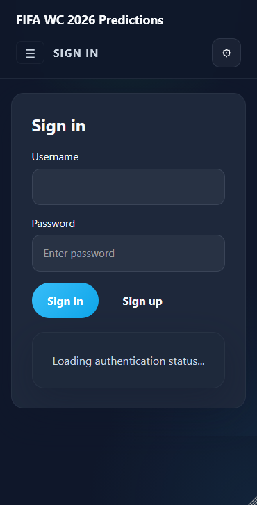
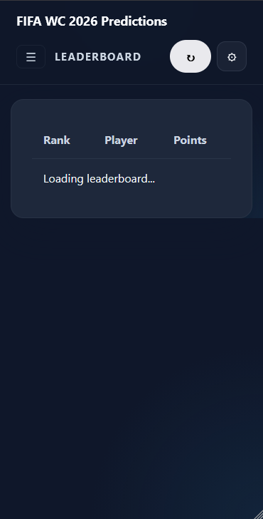
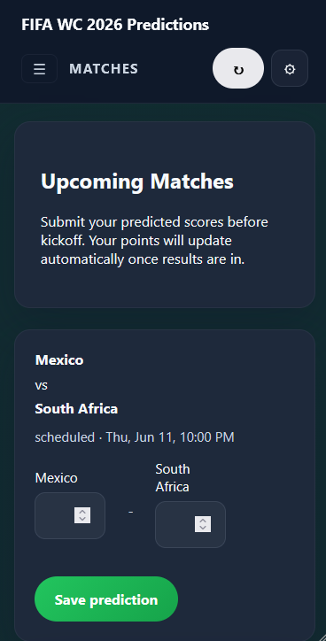
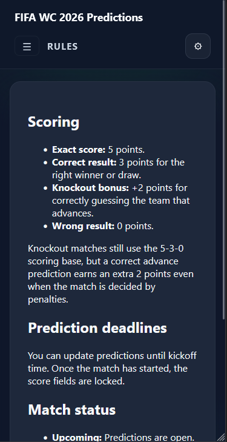

Status: Ongoing
Total work hours: 60
Tools: VS Code
Scripting: hmtl, css, js
AI: ChatGPT, Codex
With the 2026 FIFA World Cup around the corner, I decided to join forces with another football fanatic in this collaboration project. Our goal is to make a website that can be used as a pseudo-betting platform for friends to bet on upcoming games. Players receive points for correct results.
My tasks for this project were focused on the frontend of the website as well as the rules design, while my collaborator worked on the database, API and consolidating the frontend with the backend.
The frontend consists of a simple mobile-first, minimalist user interface starting with sign in/sign up forms. After choosing a unique username and entering a password, users are directed to the front page, the leaderboard. From there a user can view their rank amongst friends and navigate to the other pages, namely matches and rules. Rules simply displays what point system is used in the betting, while matches is where the actual game results are predicted. Matches shows country names with corresponding flags and an entry field for number of goals scored in that match. Predictions can be altered up to kick-off and points are awarded based on the rules, after the match has ended. The matches and results are drawn directly from the database.
The rules follow a typical points system used in similar prediction games with 5 points awarded for the exact score, 3 points for the correct result (correct winner/draw) and zero points for the wrong result. The rules are intentionally very simple so as to easily be understood. The knockout round provides an additional +2 points for correctly predicting the team to advance. This solves the issue of giving points for draws, that get decided on penalties.
The navigation can be accessed by the hamburger menu at the top left of the screen. Other features include a refresh button in matches and leaderboard, as well as an options cog at the top right with theme (light/dark mode), language selection (not working yet, but will include English, Spanish, German) and a log out button.



